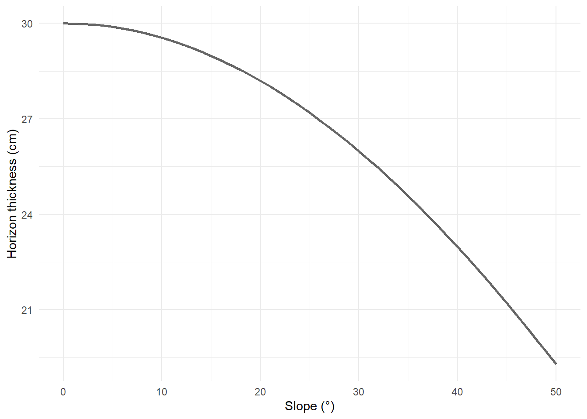

12 Defining soil horizons
A soil horizon is a distinct layer within a soil profile. Horizons are distinguished by differences in texture, stoniness, structure, colour, consistence or other soil properties as described in the following section. Delineated horizons should ideally represent depth intervals over which important soil attributes change minimally. Conversely, the horizon boundaries should represent depth intervals over which there is a relatively high rate of change of important soil properties.
Not all important soil properties change from one horizon to the next or at the same rate with depth. In some instances confident interpretation of the suitability of a soil for a particular end use may depend on the rate of change of a single property at a horizon boundary. For this reason the basis for separating the horizon may need to be explicitly stated, not just the traditional generalised estimate of the amount of overall change.
12.1 The soil surface
The soil surface has a slightly more restrictive definition than the land surface. The soil surface begins below the layer of fresh leaf litter or small living plants, but above organic soil materials such as peat. The mineral soil surface is further restricted, being the top of the first horizon dominated by mineral soil material. Horizon depths are defined only with reference to the soil surface overall - scrape back litter or grasses and measure from there.
draw this
12.2 Recording depths
When examining single small cores or auger points on, (see Table 10.3, type A, C1 and perhaps C2), record the observable upper and lower depth of each horizon from the soil surface in whole centimetres.
Where a wider exposure (see Table 10.3, type E, P1, P2) or multiple undisturbed cores are available and greater detail is desired, one may choose to record upper and lower depths as a median and range, again in whole centimetres (e.g. “28cm (27-29), 38 cm (37-40)”). At least 5 measurements should contribute to such an assessment.
Measure boundaries to and from the midpoint of each horizon transition zone (see Section 12.5).
Important 12.1: Defining horizons on steep slopes
On steeper slopes, measuring horizons from vertical exposures can exaggerate horizon thicknesses, as the soil horizons mantle the landscape perpendicular to the sloping surface (Prietzel and Wiesmeier 2019). This starts to matter at slopes > 25°, and progressively becomes more important - especially when calculating volumetric stocks of soil components. Figure 12.1 shows how a vertical 30-cm depth represents a progressively shallower ‘true depth’ as slope increases.
To adjust vertically measured horizon depths to correct for slope, apply the formula \(depth * cos(slope)\). Supply depth in cm and slope in radians. Slopes measured in degrees can be converted to radians using the formula \((slope * pi) / 180\).
12.3 Thickness
Where depths are correctly measured, thickness should be calculated after fieldwork.
12.4 Boundary shape
Horizon boundary shape can only be observed on wider exposures (see Table 10.3, type E, P1, P2). Record against the following schema:
| Code | Name | Description |
|---|---|---|
| S | Smooth | the boundary surface is a plane with few or no irregularities and usually occurs at the same depth across the profile face |
| W | Wavy | the boundary surface has broad, shallow, relatively regular pockets and none deeper than they are wide |
| I | Irregular | the boundary surface has pockets which are deeper than they are wide but not recurved |
| C | Convolute | the boundary surface has pockets which are deeper than they are wide and, in parts, recurved |
| D | Discontinuous | the boundary is discontinuous, usually due to external disturbance |
12.5 Boundary distinctness
Horizon boundaries comprise state changes over short distances. These can be reported as a direct measurement in the same way as horizon upper and lower depths, by reporting the range either side of the boundary. Report in 0.1 centimetre increments (e.g. “0.5 cm”).
For rapid assessment, horizon boundaries can be classified using the following schema:
| Code | Name | Description |
|---|---|---|
| S | Sharp | < 0.5 cm |
| A | Abrupt | 0.5 - 2.0 cm |
| D | Distinct | 2.0 - 5.0 cm |
| G | Gradual | 5.0 - 10.0 cm |
| D | Diffuse | 10 - 30.0 cm |
Where a diffuse transition is thicker than 30 cm, it should be defined as a new horizon. Use transitional horizon names as needed (see Section 21.1.2.7).
put a diagram unifying the previous three concepts here
12.6 Soil moisture status
Report soil moisture status for each horizon at the time of observation. This parameter supports assessments of drainage and permeability, and contextualises consistence tests.
| Code | Name |
Behaviour of fine earth
|
|||
|---|---|---|---|---|---|
| > 80% Sand | < 80% Sand < 18% Clay |
> 18% Clay < 35% Clay |
>35% Clay | ||
| D | Dry | loose, single grain | loose | easily broken down to powder | hard, baked, cracked |
| T | Moderately moist | will not form a ball | forms weak ball, breaks easily | forms a ball, very pliable | forms a ball, somewhat pliable |
| M | Moist | forms very weak ball | forms weak ball, breaks easily | forms a ball, very pliable | easily forms a ball |
| W | Wet | fluid, non-plastic, non-sticky | slightly fluid, slightly plastic | deformable, plastic | semi-deformable, very plastic |
| S | Saturated | water films visible, or below water table | |||
12.7 Depth to free water
Depth to free water can be determined from the upper depth of the first S saturated horizon, or specifically recorded in whole centimetres. Depending on the soil’s transmissivity, the presence of the water table may be revealed by the pit or core filling with water.
- If the water table is not encountered, record NA
- If the water table is encountered, use Table 12.4 to code its position in the profile, then record the depth above or below in whole centimetres. Do not record negative numbers to signify a water table above the surface.
e.g. ‘B 80’ for a profile saturated below 80 cm deep; ‘A 1’ for a barely-walkable peat.
| Code | Name | Description |
|---|---|---|
| NA | Not applicable | Water table not encountered |
| B | Below | Water table observed below the soil surface |
| A | Above | Water table observed at or above the soil surface |